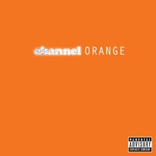

Channel Orange
Frank Ocean

 Channel Orange (stylized as channel ORANGE) is the debut studio album by American R&B singer and songwriter Frank Ocean. It was released on July 10, 2012, by Def Jam Recordings.
After releasing his mixtape Nostalgia, Ultra in 2011, Ocean began writing new songs with Malay, a producer and songwriter who assisted him with recording the album at EastWest Studios in Hollywood. Rather than rely on samples as he had with his mixtape, Ocean wanted to approach sound and song structure differently on Channel Orange. He titled the album as a reference to the neurological phenomenon grapheme-color synesthesia and the color he claimed to have perceived during the summer he first fell in love.
Channel Orange (stylized as channel ORANGE) is the debut studio album by American R&B singer and songwriter Frank Ocean. It was released on July 10, 2012, by Def Jam Recordings.
After releasing his mixtape Nostalgia, Ultra in 2011, Ocean began writing new songs with Malay, a producer and songwriter who assisted him with recording the album at EastWest Studios in Hollywood. Rather than rely on samples as he had with his mixtape, Ocean wanted to approach sound and song structure differently on Channel Orange. He titled the album as a reference to the neurological phenomenon grapheme-color synesthesia and the color he claimed to have perceived during the summer he first fell in love.
- Start
- Thinkin Bout You
- Fertilizer
- Sierra Leone
- Sweet Life
- Not Just Money
- Super Rich Kids
- Pilot Jones
- Crack Rock
- Pyramids
- Lost
- White
- Monks
- Bad Religion
- Pink Matter
- Forrest Gump
- End